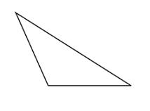

Triíngulo Obtusángulo
Triíngulo Obtusángulo

El triángulo obtusángulo es aquel que tiene un ángulo obtuso: es decir, que mide más de 90°. De los tres ángulos interiores del triángulo obtusángulo, por lo tanto, uno es obtuso, mientras que los otros dos son agudos (miden menos de 90°).
Los triángulos obtusángulos también son triángulos oblicuángulos ya que ninguno de sus ángulos internos es recto. Los triángulos acutángulos, que tienen tres ángulos agudos, ingresan en esta misma calificación. Si el triángulo cuenta con un ángulo recto, en cambio, se lo califica como triángulo rectángulo (y no es obtusángulo, acutángulo ni oblicuángulo).